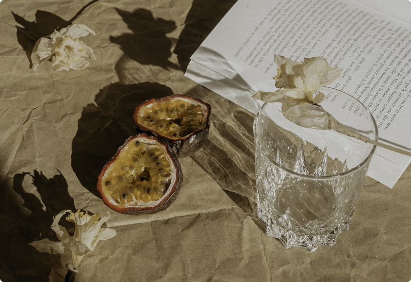

Tender Pot Roast
This is a sure fire method of making a tender pot roast every time.

- Serves: 6
- Prep Time: 20 mins
- Total Time: 30 mins
Instructions
- Add the cooked pasta, romaine, cucumber, carrot, and chicken to a large salad bowl.
- Pour ⅓ cup of dressing over the pasta salad, and add a touch more if desired. Toss to coat.
- Top with salt and pepper to taste, and green onion to serve.
- Serve the pasta salad chilled!
Ingredients
- 2 cups gluten-free farfalle pasta, cooked
- 2 heads romaine lettuce, chopped
- ½ cucumber, halved and sliced thin
- 1 medium carrot, shredded
- ¾ lb chicken, cooked and cubed
- ⅓- ½ cup ginger dressing
- Salt and pepper
- 2 tbsp green onion, chopped